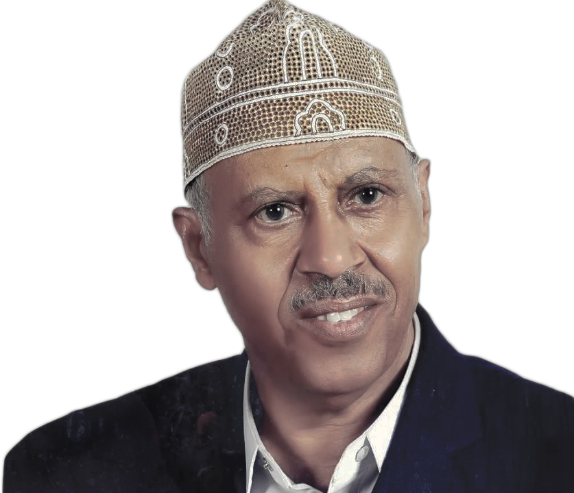

Ayoob Tarish
Singer
Nationality
Yemen, Taiz
Date of Birth
05 Aug 1944
Occupation
Traditional Singer/ Composer
Biography
Ayoob Tarish Absi is a Yemeni singer and musician
from the area of Al-Aboos in the Ta'izz Governorate.
He brought to the world a spectacularly wonderful and
colorful portrait of traditional Yemeni songs and
music. His songs accompanied us during happy and sad
days. His patriotism was clearly resembled in the
national anthem and other national works he
contributed to the country. Even now as the Arab world
is going through critical times, we find the best
elements that comfort us and encourage us to go on in
Ayoob’s national songs.
Musical Instrument
Oud
Notable Work
Yemeni Anthem
Number of Works
More than 80 songs

"
Art with no mission is no art and an artist has to have a case to fight for and present decent ideas to the world through his art and music.
"